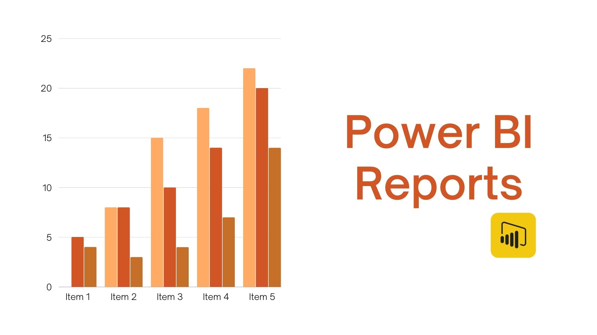
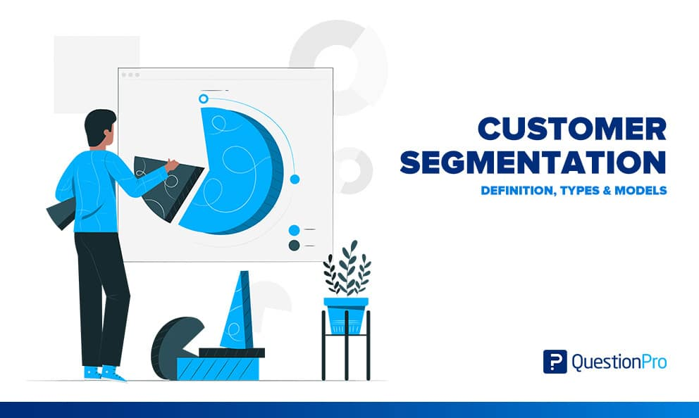

In this project, I skillfully applied data wrangling, encompassing Descriptive, Diagnostic, and Predictive Analytics, along with Machine Learning techniques.
From pre-modeling tasks to algorithm evaluation, my expertise in statistical analysis and effective data techniques ensured the delivery of insightful and impactful data-driven outcomes.


I leveraged SQL for robust data management and diverse analytics, ensuring impactful data-driven outcomes.

I leveraged Power BI for in-depth data analysis, yielding impactful insights and informed decisions.

Used Python's K-Means for Customer Segmentation, integrating full data analysis for insights.

Applied Python for Credit Card Fraud Detection, using full data analysis and machine learning.

Used Python for Breast Cancer Classification, integrating comprehensive data analysis and machine learning.

Applied Python for Diabetes Prediction, integrating thorough data analysis and machine learning techniques.
Utilized Python for Gold Price Prediction, incorporating data analysis and machine learning techniques.
.jpg)
Utilized Python for Medical Insurance Cost Prediction, integrating data analysis and machine learning.